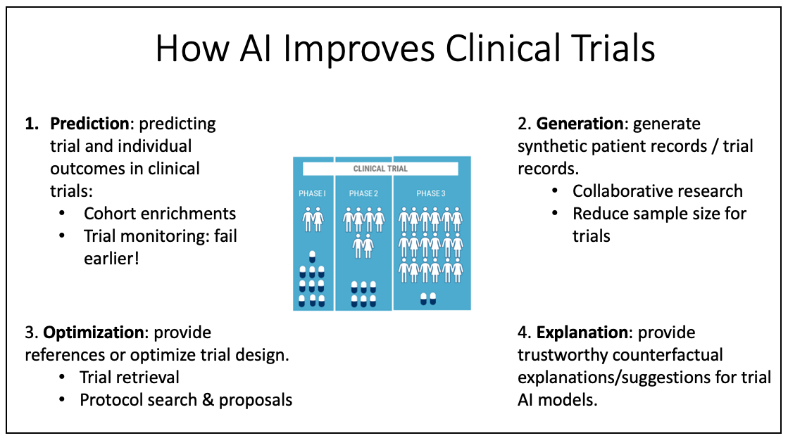

Software
-
TransTab: Transferable Tabular Transformers. [Doc] [Github]
Highlight: Support flexible learning and prediction with variable-column tables.

-
PyTrial: AI-driven Digital Clinical Trial Optimization.
Highlight: The first package that supports AI in comprehensive clinical trial tasks.
 -
Trial2Vec: Clinical Trial Similarity Search. [Github]
Highlight: The first package that supports clinical trial dense retrieval, with off-the-shelf pretrained models and indexed trial embeddings.
-
PromptEHR: Synthetic EHR Generation. [Github]
Highlight: Provide pretrained language models for EHR sequence generation, with additional 10K synthetic data available.